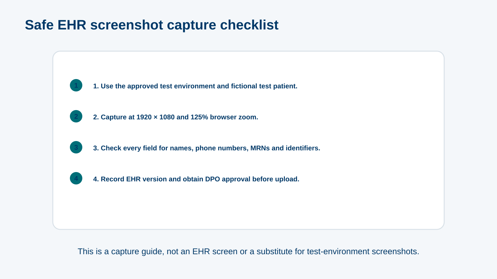

MODULE 08
EHR Consultation Workflow: Guided Simulation
~25 minutes
✦ehr-000 · L1 Title · title visual · supplied client logo and background onlyEHR Consultation Workflow: Guided Simulation · official client logo and palette applied to every reference screen.
storyboard.md; screenshots, policy values and hotspot coordinates remain subject to the module’s source lock.MODULE 08
~25 minutes
✦ehr-000 · L1 Title · title visual · supplied client logo and background onlyL3 Content · A — Intro & workflow map
Complete, linked, on the day · Disclaimer (B7) · "Everything here is a test patient."

ehr-001 · content_slide · visual asset: ehr-capture-sheet · screen visual reference only · inspect final responsive build before approvalL3 Content · A — Intro & workflow map
9 steps as events: 1 Open · 2 Document · 3 Diagnose · 4 Order · 5 Review orders · 6 Summary · 7 Educate · 8 Refer …
ehr-002 · timeline · screen visual reference only · inspect final responsive build before approvalL5 Scenario · B — Open & document
Step 1: today's consultation list → click the test patient. Step 2: open the consultation form
ehr-010 · simulation · screen visual reference only · inspect final responsive build before approvalehr-shot-listToday's consultation list, test patient only, 1920×1080 at 125% zoom
Draft alt: "Today's consultation list with one test patient."
PENDING 08 B2/D6: approved test environment, fictional patient, per-file DPO review; B3 version and B5 labels confirmed.ehr-shot-formConsultation form with all sections visible (may need 2 crops)
Draft alt: "Consultation form showing mandatory sections."
PENDING 08 B2/D6: approved test environment, fictional patient, per-file DPO review; B3 version and B5 labels confirmed. B4 mandatory fields.L3 Content · B — Open & document
Consultation form screenshot; regions = each mandatory section (B4): chief complaint · duration · HPI · past history (allergies, medications) · examination · plan of care
ehr-011 · hotspot · screen visual reference only · inspect final responsive build before approvalehr-shot-formConsultation form with all sections visible (may need 2 crops)
Draft alt: "Consultation form showing mandatory sections."
PENDING 08 B2/D6: approved test environment, fictional patient, per-file DPO review; B3 version and B5 labels confirmed. B4 mandatory fields.L4 Question · B — Open & document
"You press Complete and the system refuses. The form shows chief complaint, HPI and examination filled in." Most likely cause → plan of care (or another mandatory field …
ehr-012 · mcq · screen visual reference only · inspect final responsive build before approvalL5 Scenario · C — Diagnosis
Step 1: click Add Diagnosis. Step 2: type E11 (accepted: E11, e11, type 2 diabetes). Step 3: choose Type 2 diabetes mellitus from results. Step 4: mark as …
ehr-020 · simulation · screen visual reference only · inspect final responsive build before approvalehr-shot-dx-1Add Diagnosis dialog; capture in approved test environment, 1920×1080 at 125% zoom.
Draft alt: Test-patient EHR screen showing add diagnosis dialog; no real identifiers.
PENDING 08 B2/D6: approved test environment, fictional patient, per-file DPO review; B3 version and B5 labels confirmed.ehr-shot-dx-2Diagnosis search with draft E11 input; capture in approved test environment, 1920×1080 at 125% zoom.
Draft alt: Test-patient EHR screen showing diagnosis search with draft e11 input; no real identifiers.
PENDING 08 B2/D6: approved test environment, fictional patient, per-file DPO review; B3 version and B5 labels confirmed.ehr-shot-dx-3Diagnosis results; capture in approved test environment, 1920×1080 at 125% zoom.
Draft alt: Test-patient EHR screen showing diagnosis results; no real identifiers.
PENDING 08 B2/D6: approved test environment, fictional patient, per-file DPO review; B3 version and B5 labels confirmed.ehr-shot-dx-4Primary diagnosis details, onset and chronicity; capture in approved test environment, 1920×1080 at 125% zoom.
Draft alt: Test-patient EHR screen showing primary diagnosis details, onset and chronicity; no real identifiers.
PENDING 08 B2/D6: approved test environment, fictional patient, per-file DPO review; B3 version and B5 labels confirmed.ehr-shot-dx-5Diagnosis favourites star; capture in approved test environment, 1920×1080 at 125% zoom.
Draft alt: Test-patient EHR screen showing diagnosis favourites star; no real identifiers.
PENDING 08 B2/D6: approved test environment, fictional patient, per-file DPO review; B3 version and B5 labels confirmed.L3 Content · D — Orders
Search by service · lab · referral · package · order profile · Form Wizard reviews a package before you finalise
ehr-030 · content_slide · screen visual reference only · inspect final responsive build before approvalL5 Scenario · D — Orders
Step 1: open order search. Step 2: type the drug name (B6 example). Step 3: set route, dose, frequency, duration. Step 4: choose the assessed diagnosis (E11). Step …
ehr-031 · simulation · screen visual reference only · inspect final responsive build before approvalehr-shot-order-1Order search; capture in approved test environment, 1920×1080 at 125% zoom.
Draft alt: Test-patient EHR screen showing order search; no real identifiers.
PENDING 08 B2/D6: approved test environment, fictional patient, per-file DPO review; B3 version and B5 labels confirmed. B6 Pharmacy-approved examples.ehr-shot-order-2Drug-name search using the approved B6 example; capture in approved test environment, 1920×1080 at 125% zoom.
Draft alt: Test-patient EHR screen showing drug-name search using the approved b6 example; no real identifiers.
PENDING 08 B2/D6: approved test environment, fictional patient, per-file DPO review; B3 version and B5 labels confirmed. B6 Pharmacy-approved examples.ehr-shot-order-3Medication route, dose, frequency and duration fields; capture in approved test environment, 1920×1080 at 125% zoom.
Draft alt: Test-patient EHR screen showing medication route, dose, frequency and duration fields; no real identifiers.
PENDING 08 B2/D6: approved test environment, fictional patient, per-file DPO review; B3 version and B5 labels confirmed. B6 Pharmacy-approved examples.ehr-shot-order-4Assessed-diagnosis selection; capture in approved test environment, 1920×1080 at 125% zoom.
Draft alt: Test-patient EHR screen showing assessed-diagnosis selection; no real identifiers.
PENDING 08 B2/D6: approved test environment, fictional patient, per-file DPO review; B3 version and B5 labels confirmed. B6 Pharmacy-approved examples.ehr-shot-order-5Patient-instructions fields; capture in approved test environment, 1920×1080 at 125% zoom.
Draft alt: Test-patient EHR screen showing patient-instructions fields; no real identifiers.
PENDING 08 B2/D6: approved test environment, fictional patient, per-file DPO review; B3 version and B5 labels confirmed. B6 Pharmacy-approved examples.ehr-shot-order-6Order submission control; capture in approved test environment, 1920×1080 at 125% zoom.
Draft alt: Test-patient EHR screen showing order submission control; no real identifiers.
PENDING 08 B2/D6: approved test environment, fictional patient, per-file DPO review; B3 version and B5 labels confirmed. B6 Pharmacy-approved examples.L5 Scenario · D — Orders
Step 1: search the package (B6). Step 2: Form Wizard step 1 — review items. Step 3: remove an item not needed. Step 4: finalise
ehr-032 · simulation · screen visual reference only · inspect final responsive build before approvalehr-shot-wizard-1Package search using the approved B6 example; capture in approved test environment, 1920×1080 at 125% zoom.
Draft alt: Test-patient EHR screen showing package search using the approved b6 example; no real identifiers.
PENDING 08 B2/D6: approved test environment, fictional patient, per-file DPO review; B3 version and B5 labels confirmed. B6 Pharmacy-approved examples.ehr-shot-wizard-2Form Wizard item review; capture in approved test environment, 1920×1080 at 125% zoom.
Draft alt: Test-patient EHR screen showing form wizard item review; no real identifiers.
PENDING 08 B2/D6: approved test environment, fictional patient, per-file DPO review; B3 version and B5 labels confirmed. B6 Pharmacy-approved examples.ehr-shot-wizard-3Form Wizard item removal; capture in approved test environment, 1920×1080 at 125% zoom.
Draft alt: Test-patient EHR screen showing form wizard item removal; no real identifiers.
PENDING 08 B2/D6: approved test environment, fictional patient, per-file DPO review; B3 version and B5 labels confirmed. B6 Pharmacy-approved examples.ehr-shot-wizard-4Form Wizard finalisation; capture in approved test environment, 1920×1080 at 125% zoom.
Draft alt: Test-patient EHR screen showing form wizard finalisation; no real identifiers.
PENDING 08 B2/D6: approved test environment, fictional patient, per-file DPO review; B3 version and B5 labels confirmed. B6 Pharmacy-approved examples.L4 Question · D — Orders
"You order ⚠ PENDING non-formulary item, B6. The system flags it. What does that mean?" → it needs approval before it can be dispensed; consider a formulary alternative
ehr-033 · mcq · screen visual reference only · inspect final responsive build before approvalL4 Question · D — Orders
"Why must each order be linked to the assessed diagnosis?" → it shows medical necessity to the reviewer and keeps the record consistent; unlinked orders are a common …
ehr-034 · mcq · screen visual reference only · inspect final responsive build before approvalL5 Scenario · E — Summary & education
Step 1: open Consultation Summary. Step 2: check lab orders, special tests, referrals. Step 3: Download and Print
ehr-040 · simulation · screen visual reference only · inspect final responsive build before approvalehr-shot-summary-1Consultation Summary entry; capture in approved test environment, 1920×1080 at 125% zoom.
Draft alt: Test-patient EHR screen showing consultation summary entry; no real identifiers.
PENDING 08 B2/D6: approved test environment, fictional patient, per-file DPO review; B3 version and B5 labels confirmed.ehr-shot-summary-2Lab orders, special tests and referrals in summary; capture in approved test environment, 1920×1080 at 125% zoom.
Draft alt: Test-patient EHR screen showing lab orders, special tests and referrals in summary; no real identifiers.
PENDING 08 B2/D6: approved test environment, fictional patient, per-file DPO review; B3 version and B5 labels confirmed.ehr-shot-summary-3Download and Print control; capture in approved test environment, 1920×1080 at 125% zoom.
Draft alt: Test-patient EHR screen showing download and print control; no real identifiers.
PENDING 08 B2/D6: approved test environment, fictional patient, per-file DPO review; B3 version and B5 labels confirmed.L5 Scenario · E — Summary & education
Step 1: open Send SMS – educational material. Step 2: choose department. Step 3: type E11. Step 4: select the leaflet. Step 5: Send (B8)
ehr-041 · simulation · screen visual reference only · inspect final responsive build before approvalehr-shot-sms-1Send SMS educational-material entry; capture in approved test environment, 1920×1080 at 125% zoom.
Draft alt: Test-patient EHR screen showing send sms educational-material entry; no real identifiers.
PENDING 08 B2/D6: approved test environment, fictional patient, per-file DPO review; B3 version and B5 labels confirmed. B8 SMS feature/leaflets; fictional phone only.ehr-shot-sms-2SMS department selection; capture in approved test environment, 1920×1080 at 125% zoom.
Draft alt: Test-patient EHR screen showing sms department selection; no real identifiers.
PENDING 08 B2/D6: approved test environment, fictional patient, per-file DPO review; B3 version and B5 labels confirmed. B8 SMS feature/leaflets; fictional phone only.ehr-shot-sms-3SMS diagnosis-code search; capture in approved test environment, 1920×1080 at 125% zoom.
Draft alt: Test-patient EHR screen showing sms diagnosis-code search; no real identifiers.
PENDING 08 B2/D6: approved test environment, fictional patient, per-file DPO review; B3 version and B5 labels confirmed. B8 SMS feature/leaflets; fictional phone only.ehr-shot-sms-4SMS leaflet selection; capture in approved test environment, 1920×1080 at 125% zoom.
Draft alt: Test-patient EHR screen showing sms leaflet selection; no real identifiers.
PENDING 08 B2/D6: approved test environment, fictional patient, per-file DPO review; B3 version and B5 labels confirmed. B8 SMS feature/leaflets; fictional phone only.ehr-shot-sms-5SMS Send control; capture in approved test environment, 1920×1080 at 125% zoom.
Draft alt: Test-patient EHR screen showing sms send control; no real identifiers.
PENDING 08 B2/D6: approved test environment, fictional patient, per-file DPO review; B3 version and B5 labels confirmed. B8 SMS feature/leaflets; fictional phone only.L3 Content · E — Summary & education
Checklist: infection control · medication use · disease/condition · treatment · health & lifestyle · other · "Required before finalising"
ehr-042 · content_slide · screen visual reference only · inspect final responsive build before approvalL5 Scenario · F — Referral & finish
Step 1: open referral. Step 2: specialty = Endocrinology. Step 3: type the reason (approved example phrase, e.g. "poorly controlled type 2 diabetes"; variants listed in input_accepted). Step …
ehr-050 · simulation · screen visual reference only · inspect final responsive build before approvalehr-shot-ref-1Referral entry; capture in approved test environment, 1920×1080 at 125% zoom.
Draft alt: Test-patient EHR screen showing referral entry; no real identifiers.
PENDING 08 B2/D6: approved test environment, fictional patient, per-file DPO review; B3 version and B5 labels confirmed. B9 referral timing and approved reason.ehr-shot-ref-2Referral specialty selection; capture in approved test environment, 1920×1080 at 125% zoom.
Draft alt: Test-patient EHR screen showing referral specialty selection; no real identifiers.
PENDING 08 B2/D6: approved test environment, fictional patient, per-file DPO review; B3 version and B5 labels confirmed. B9 referral timing and approved reason.ehr-shot-ref-3Referral-reason field; capture in approved test environment, 1920×1080 at 125% zoom.
Draft alt: Test-patient EHR screen showing referral-reason field; no real identifiers.
PENDING 08 B2/D6: approved test environment, fictional patient, per-file DPO review; B3 version and B5 labels confirmed. B9 referral timing and approved reason.ehr-shot-ref-4Referral type and timing fields; capture in approved test environment, 1920×1080 at 125% zoom.
Draft alt: Test-patient EHR screen showing referral type and timing fields; no real identifiers.
PENDING 08 B2/D6: approved test environment, fictional patient, per-file DPO review; B3 version and B5 labels confirmed. B9 referral timing and approved reason.ehr-shot-ref-5Follow-up toggle and interval; capture in approved test environment, 1920×1080 at 125% zoom.
Draft alt: Test-patient EHR screen showing follow-up toggle and interval; no real identifiers.
PENDING 08 B2/D6: approved test environment, fictional patient, per-file DPO review; B3 version and B5 labels confirmed. B9 referral timing and approved reason.ehr-shot-ref-6Referral Save control; capture in approved test environment, 1920×1080 at 125% zoom.
Draft alt: Test-patient EHR screen showing referral save control; no real identifiers.
PENDING 08 B2/D6: approved test environment, fictional patient, per-file DPO review; B3 version and B5 labels confirmed. B9 referral timing and approved reason.L4 Question · F — Referral & finish
9 steps from ehr-002 in order
ehr-051 · sorting · screen visual reference only · inspect final responsive build before approvalL3 Content · F — Referral & finish
"Record saved successfully" → Complete · What happens if a field is missing · Where to get help (IT service desk)
ehr-052 · content_slide · screen visual reference only · inspect final responsive build before approvalL6 Results / close · Close
ehr-o1…o5
ehr-090 · results_breakdown · screen visual reference only · inspect final responsive build before approvalL6 Results / close · Close
Complete, specific, linked · Links: EHR quick-reference card (PDF), IT service desk
ehr-091 · summary · screen visual reference only · inspect final responsive build before approval